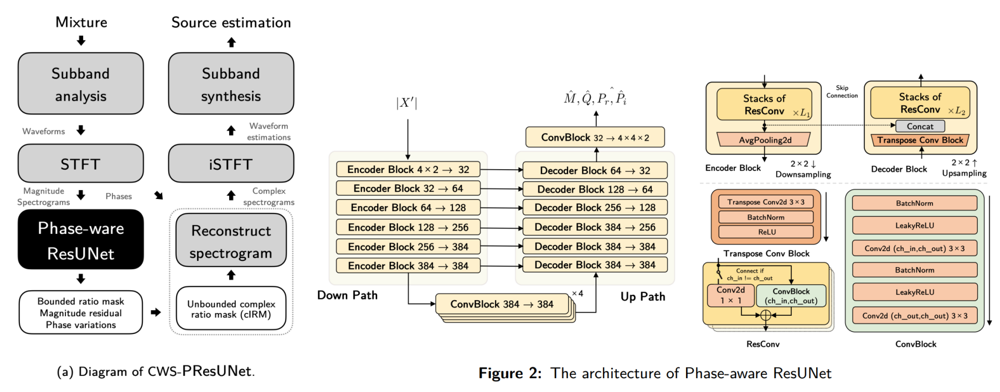

Channel-wise Subband Phase-aware ResUNet¶
Channel-wise Subband Phase-aware ResUNet (CWS-PResUNet) is the model we submitted for the 2021 ISMIR MDX Challenge. On the MUSDB18HQ dataset, our proposed CWS-PResUNet achieves high performance on vocals separation with an 8.92 SDR score. And our final submitted system ByteMSS ranks the 2nd on vocals score and 5th on average scores in the 2021 ISMIR MDX Challenge (leaderboard A).
Materials¶
To reproduce our work: link to github
Use pretrained models online: colab
To perform subband operations: link to github
Architecture overview¶

Our system is a source-dedicated models to perform music source separation (MSS). The overall pipline of our CWS-PResUNet is shown in the above image. The two major differences in this models include 1) Working on subband feature domain, 2) Estimating subband unbounded mask and subband phase variations.
Details of our model can be found in our paper.
Subband feature for MSS¶
In my opinion, subband features can inspire more innovative ideas in MSS as an alternative to the widely used spectrogram or time domain feature. That’s because:
Subband decomposition is revertable. (Just like STFT/iSTFT)
Subband feature decouple information in different subbands.
Subband feature lower the data dimension (e.g. 44.1kHz -> 11.025kHz).
In our model, we do not directly use waveform or spectrogram as input feature. Instead, we perform time domain subband decomposition (analysis) first and then perform separation task on their spectrograms.
Experiment results¶
Our final submitted system use CWS-PResUNet to separate vocals and other. For bass and drums, we directly use the baseline demucs because it performs better.
Models |
Vocals |
Drums |
Bass |
Other |
Average |
|---|---|---|---|---|---|
X-UMX |
6.61 |
6.47 |
5.43 |
4.64 |
5.79 |
D3Net |
7.24 |
7.01 |
5.25 |
4.53 |
6.01 |
Demucs |
6.89 |
6.57 |
6.53 |
5.14 |
6.28 |
CWS-PResUNet |
8.92 |
6.38 |
5.93 |
5.84 |
6.77 |
ByteMSS |
8.92 |
6.57 |
6.53 |
5.84 |
6.97 |
Contacts¶
Email: haoheliu@gmail.com
Github@haoheliu